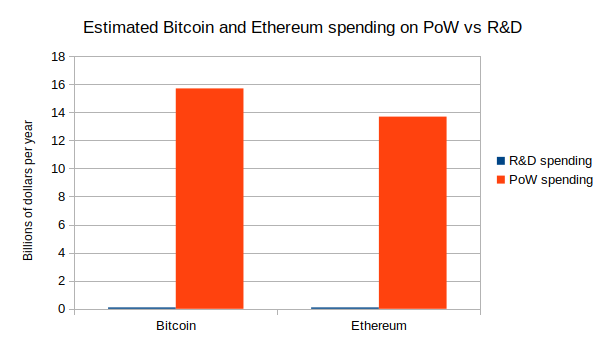
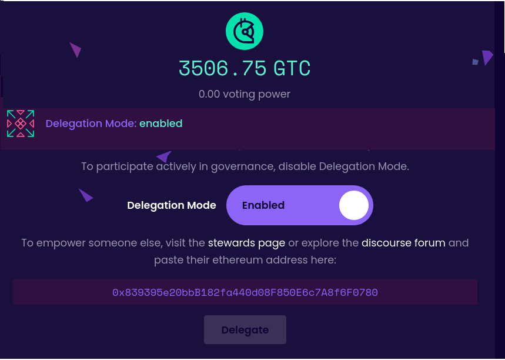
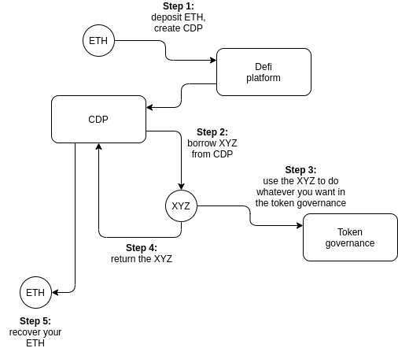
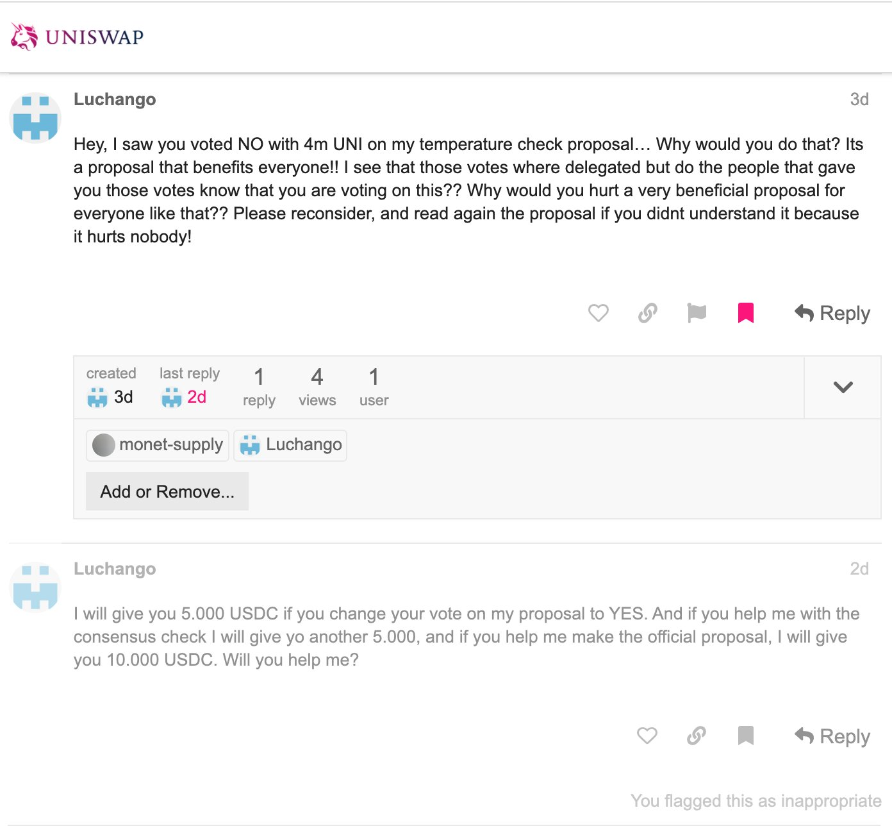
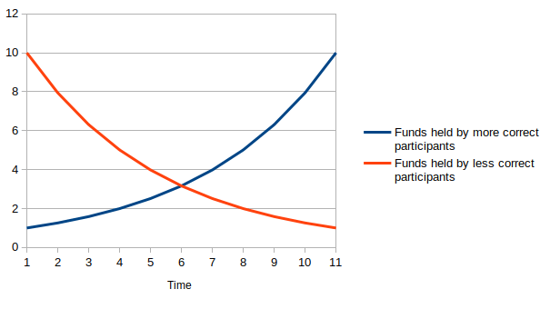
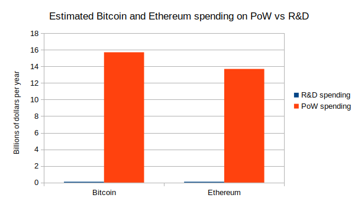
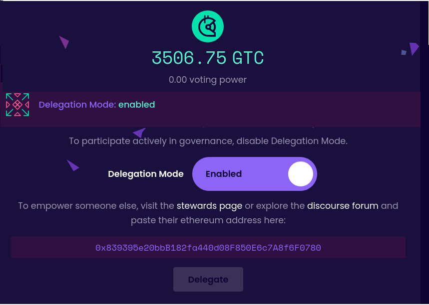
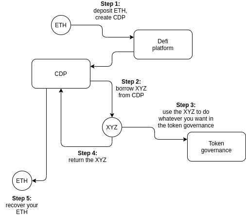
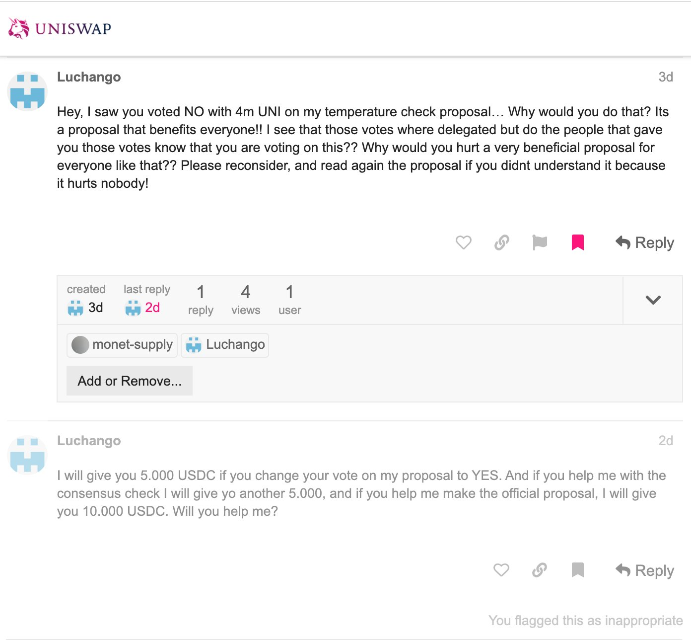
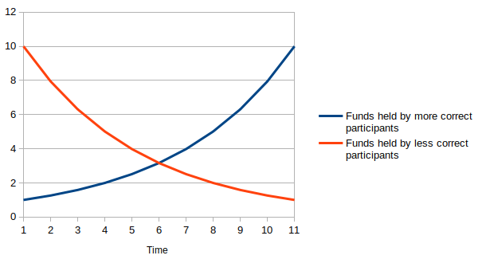

Moving beyond coin voting governance
2021 Aug 16
See all posts
Moving beyond coin voting governance
Special thanks to Karl Floersch, Dan Robinson and Tina Zhen for feedback and review. See also Notes on Blockchain Governance, Governance, Part 2: Plutocracy Is Still Bad, On Collusion and Coordination, Good and Bad for earlier thinking on similar topics.
One of the important trends in the blockchain space over the past year is the transition from focusing on decentralized finance (DeFi) to also thinking about decentralized governance (DeGov). While the year 2020 is often widely, and with much justification, hailed as a year of DeFi, over the year since then the growing complexity and capability of DeFi projects that make up this trend has led to growing interest in decentralized governance to handle that complexity. There are examples inside of Ethereum: YFI, Compound, Synthetix, UNI, Gitcoin and others have all launched, or even started with, some kind of DAO. But it's also true outside of Ethereum, with arguments over infrastructure funding proposals in Bitcoin Cash, infrastructure funding votes in Zcash, and much more.
The rising popularity of formalized decentralized governance of some form is undeniable, and there are important reasons why people are interested in it. But it is also important to keep in mind the risks of such schemes, as the recent hostile takeover of Steem and subsequent mass exodus to Hive makes clear. I would further argue that these trends are unavoidable. Decentralized governance in some contexts is both necessary and dangerous, for reasons that I will get into in this post. How can we get the benefits of DeGov while minimizing the risks? I will argue for one key part of the answer: we need to move beyond coin voting as it exists in its present form.
DeGov is necessary
Ever since the Declaration of Independence of Cyberspace in 1996, there has been a key unresolved contradiction in what can be called cypherpunk ideology. On the one hand, cypherpunk values are all about using cryptography to minimize coercion, and maximize the efficiency and reach of the main non-coercive coordination mechanism available at the time: private property and markets. On the other hand, the economic logic of private property and markets is optimized for activities that can be "decomposed" into repeated one-to-one interactions, and the infosphere, where art, documentation, science and code are produced and consumed through irreducibly one-to-many interactions, is the exact opposite of that.
There are two key problems inherent to such an environment that need to be solved:
- Funding public goods: how do projects that are valuable to a wide and unselective group of people in the community, but which often do not have a business model (eg. layer-1 and layer-2 protocol research, client development, documentation...), get funded?
- Protocol maintenance and upgrades: how are upgrades to the protocol, and regular maintenance and adjustment operations on parts of the protocol that are not long-term stable (eg. lists of safe assets, price oracle sources, multi-party computation keyholders), agreed upon?
Early blockchain projects largely ignored both of these challenges, pretending that the only public good that mattered was network security, which could be achieved with a single algorithm set in stone forever and paid for with fixed proof of work rewards. This state of affairs in funding was possible at first because of extreme Bitcoin price rises from 2010-13, then the one-time ICO boom from 2014-17, and again from the simultaneous second crypto bubble of 2014-17, all of which made the ecosystem wealthy enough to temporarily paper over the large market inefficiencies. Long-term governance of public resources was similarly ignored: Bitcoin took the path of extreme minimization, focusing on providing a fixed-supply currency and ensuring support for layer-2 payment systems like Lightning and nothing else, Ethereum continued developing mostly harmoniously (with one major exception) because of the strong legitimacy of its pre-existing roadmap (basically: "proof of stake and sharding"), and sophisticated application-layer projects that required anything more did not yet exist.
But now, increasingly, that luck is running out, and challenges of coordinating protocol maintenance and upgrades and funding documentation, research and development while avoiding the risks of centralization are at the forefront.
The need for DeGov for funding public goods
It is worth stepping back and seeing the absurdity of the present situation. Daily mining issuance rewards from Ethereum are about 13500 ETH, or about $40m, per day. Transaction fees are similarly high; the non-EIP-1559-burned portion continues to be around 1,500 ETH (~$4.5m) per day. So there are many billions of dollars per year going to fund network security. Now, what is the budget of the Ethereum Foundation? About $30-60 million per year. There are non-EF actors (eg. Consensys) contributing to development, but they are not much larger. The situation in Bitcoin is similar, with perhaps even less funding going into non-security public goods.
Here is the situation in a chart:

Within the Ethereum ecosystem, one can make a case that this disparity does not matter too much; tens of millions of dollars per year is "enough" to do the needed R&D and adding more funds does not necessarily improve things, and so the risks to the platform's credible neutrality from instituting in-protocol developer funding exceed the benefits. But in many smaller ecosystems, both ecosystems within Ethereum and entirely separate blockchains like BCH and Zcash, the same debate is brewing, and at those smaller scales the imbalance makes a big difference.
Enter DAOs. A project that launches as a "pure" DAO from day 1 can achieve a combination of two properties that were previously impossible to combine: (i) sufficiency of developer funding, and (ii) credible neutrality of funding (the much-coveted "fair launch"). Instead of developer funding coming from a hardcoded list of receiving addresses, the decisions can be made by the DAO itself.

Of course, it's difficult to make a launch perfectly fair, and unfairness from information asymmetry can often be worse than unfairness from explicit premines (was Bitcoin really a fair launch considering how few people had a chance to even hear about it by the time 1/4 of the supply had already been handed out by the end of 2010?). But even still, in-protocol compensation for non-security public goods from day one seems like a potentially significant step forward toward getting sufficient and more credibly neutral developer funding.
The need for DeGov for protocol maintenance and upgrades
In addition to public goods funding, the other equally important problem requiring governance is protocol maintenance and upgrades. While I advocate trying to minimize all non-automated parameter adjustment (see the "limited governance" section below) and I am a fan of RAI's "un-governance" strategy, there are times where governance is unavoidable. Price oracle inputs must come from somewhere, and occasionally that somewhere needs to change. Until a protocol "ossifies" into its final form, improvements have to be coordinated somehow. Sometimes, a protocol's community might think that they are ready to ossify, but then the world throws a curveball that requires a complete and controversial restructuring. What happens if the US dollar collapses, and RAI has to scramble to create and maintain their own decentralized CPI index for their stablecoin to remain stable and relevant? Here too, DeGov is necessary, and so avoiding it outright is not a viable solution.
One important distinction is whether or not off-chain governance is possible. I have for a long time been a fan of off-chain governance wherever possible. And indeed, for base-layer blockchains, off-chain governance absolutely is possible. But for application-layer projects, and especially defi projects, we run into the problem that application-layer smart contract systems often directly control external assets, and that control cannot be forked away. If Tezos's on-chain governance gets captured by an attacker, the community can hard-fork away without any losses beyond (admittedly high) coordination costs. If MakerDAO's on-chain governance gets captured by an attacker, the community can absolutely spin up a new MakerDAO, but they will lose all the ETH and other assets that are stuck in the existing MakerDAO CDPs. Hence, while off-chain governance is a good solution for base layers and some application-layer projects, many application-layer projects, particularly DeFi, will inevitably require formalized on-chain governance of some form.
DeGov is dangerous
However, all current instantiations of decentralized governance come with great risks. To followers of my writing, this discussion will not be new; the risks are much the same as those that I talked about here, here and here. There are two primary types of issues with coin voting that I worry about: (i) inequalities and incentive misalignments even in the absence of attackers, and (ii) outright attacks through various forms of (often obfuscated) vote buying. To the former, there have already been many proposed mitigations (eg. delegation), and there will be more. But the latter is a much more dangerous elephant in the room to which I see no solution within the current coin voting paradigm.
Problems with coin voting even in the absence of attackers
The problems with coin voting even without explicit attackers are increasingly well-understood (eg. see this recent piece by DappRadar and Monday Capital), and mostly fall into a few buckets:
- Small groups of wealthy participants ("whales") are better at successfully executing decisions than large groups of small-holders. This is because of the tragedy of the commons among small-holders: each small-holder has only an insignificant influence on the outcome, and so they have little incentive to not be lazy and actually vote. Even if there are rewards for voting, there is little incentive to research and think carefully about what they are voting for.
- Coin voting governance empowers coin holders and coin holder interests at the expense of other parts of the community: protocol communities are made up of diverse constituencies that have many different values, visions and goals. Coin voting, however, only gives power to one constituency (coin holders, and especially wealthy ones), and leads to over-valuing the goal of making the coin price go up even if that involves harmful rent extraction.
- Conflict of interest issues: giving voting power to one constituency (coin holders), and especially over-empowering wealthy actors in that constituency, risks over-exposure to the conflicts-of-interest within that particular elite (eg. investment funds or holders that also hold tokens of other DeFi platforms that interact with the platform in question)
There is one major type of strategy being attempted for solving the first problem (and therefore also mitigating the third problem): delegation. Smallholders don't have to personally judge each decision; instead, they can delegate to community members that they trust. This is an honorable and worthy experiment; we shall see how well delegation can mitigate the problem.

My voting delegation page in the Gitcoin DAO
The problem of coin holder centrism, on the other hand, is significantly more challenging: coin holder centrism is inherently baked into a system where coin holder votes are the only input. The mis-perception that coin holder centrism is an intended goal, and not a bug, is already causing confusion and harm; one (broadly excellent) article discussing blockchain public goods complains:
Can crypto protocols be considered public goods if ownership is concentrated in the hands of a few whales? Colloquially, these market primitives are sometimes described as "public infrastructure," but if blockchains serve a "public" today, it is primarily one of decentralized finance. Fundamentally, these tokenholders share only one common object of concern: price.
The complaint is false; blockchains serve a public much richer and broader than DeFi token holders. But our coin-voting-driven governance systems are completely failing to capture that, and it seems difficult to make a governance system that captures that richness without a more fundamental change to the paradigm.
Coin voting's deep fundamental vulnerability to attackers: vote buying
The problems get much worse once determined attackers trying to subvert the system enter the picture. The fundamental vulnerability of coin voting is simple to understand. A token in a protocol with coin voting is a bundle of two rights that are combined into a single asset: (i) some kind of economic interest in the protocol's revenue and (ii) the right to participate in governance. This combination is deliberate: the goal is to align power and responsibility. But in fact, these two rights are very easy to unbundle from each other. Imagine a simple wrapper contract that has these rules: if you deposit 1 XYZ into the contract, you get back 1 WXYZ. That WXYZ can be converted back into an XYZ at any time, plus in addition it accrues dividends. Where do the dividends come from? Well, while the XYZ coins are inside the wrapper contract, it's the wrapper contract that has the ability to use them however it wants in governance (making proposals, voting on proposals, etc). The wrapper contract simply auctions off this right every day, and distributes the profits among the original depositors.

As an XYZ holder, is it in your interest to deposit your coins into the contract? If you are a very large holder, it might not be; you like the dividends, but you are scared of what a misaligned actor might do with the governance power you are selling them. But if you are a smaller holder, then it very much is. If the governance power auctioned by the wrapper contract gets bought up by an attacker, you personally only suffer a small fraction of the cost of the bad governance decisions that your token is contributing to, but you personally gain the full benefit of the dividend from the governance rights auction. This situation is a classic tragedy of the commons.
Suppose that an attacker makes a decision that corrupts the DAO to the attacker's benefit. The harm per participant from the decision succeeding is \(D\), and the chance that a single vote tilts the outcome is \(p\). Suppose an attacker makes a bribe of \(B\). The game chart looks like this:
| Accept attacker's bribe |
\(B - D * p\) |
\(-999 * D * p\) |
| Reject bribe, vote your conscience |
\(0\) |
\(0\) |
If \(B > D * p\), you are inclined to accept the bribe, but as long as \(B < 1000 * D * p\), accepting the bribe is collectively harmful. So if \(p < 1\) (usually, \(p\) is far below \(1\)), there is an opportunity for an attacker to bribe users to adopt a net-negative decision, compensating each user far less than the harm they suffer.
One natural critique of voter bribing fears is: are voters really going to be so immoral as to accept such obvious bribes? The average DAO token holder is an enthusiast, and it would be hard for them to feel good about so selfishly and blatantly selling out the project. But what this misses is that there are much more obfuscated ways to separate out profit sharing rights from governance rights, that don't require anything remotely as explicit as a wrapper contract.
The simplest example is borrowing from a defi lending platform (eg. Compound). Someone who already holds ETH can lock up their ETH in a CDP ("collateralized debt position") in one of these platforms, and once they do that the CDP contract allows them to borrow an amount of XYZ up to eg. half the value of the ETH that they put in. They can then do whatever they want with this XYZ. To recover their ETH, they would eventually need to pay back the XYZ that they borrowed, plus interest.

Note that throughout this process, the borrower has no financial exposure to XYZ. That is, if they use their XYZ to vote for a governance decision that destroys the value of XYZ, they do not lose a penny as a result. The XYZ they are holding is XYZ that they have to eventually pay back into the CDP regardless, so they do not care if its value goes up or down. And so we have achieved unbundling: the borrower has governance power without economic interest, and the lender has economic interest without governance power.
There are also centralized mechanisms for separating profit sharing rights from governance rights. Most notably, when users deposit their coins on a (centralized) exchange, the exchange holds full custody of those coins, and the exchange has the ability to use those coins to vote. This is not mere theory; there is evidence of exchanges using their users' coins in several DPoS systems. The most notable recent example is the attempted hostile takeover of Steem, where exchanges used their customers' coins to vote for some proposals that helped to cement a takeover of the Steem network that the bulk of the community strongly opposed. The situation was only resolved through an outright mass exodus, where a large portion of the community moved to a different chain called Hive.
Some DAO protocols are using timelock techniques to limit these attacks, requiring users to lock their coins and make them immovable for some period of time in order to vote. These techniques can limit buy-then-vote-then-sell attacks in the short term, but ultimately timelock mechanisms can be bypassed by users holding and voting with their coins through a contract that issues a wrapped version of the token (or, more trivially, a centralized exchange). As far as security mechanisms go, timelocks are more like a paywall on a newspaper website than they are like a lock and key.
At present, many blockchains and DAOs with coin voting have so far managed to avoid these attacks in their most severe forms. There are occasional signs of attempted bribes:

But despite all of these important issues, there have been much fewer examples of outright voter bribing, including obfuscated forms such as using financial markets, than simple economic reasoning would suggest. The natural question to ask is: why haven't more outright attacks happened yet?
My answer is that the "why not yet" relies on three contingent factors that are true today, but are likely to get less true over time:
- Community spirit from having a tightly-knit community, where everyone feels a sense of camaraderie in a common tribe and mission..
- High wealth concentration and coordination of token holders; large holders have higher ability to affect the outcome and have investments in long-term relationships with each other (both the "old boys clubs" of VCs, but also many other equally powerful but lower-profile groups of wealthy token holders), and this makes them much more difficult to bribe.
- Immature financial markets in governance tokens: ready-made tools for making wrapper tokens exist in proof-of-concept forms but are not widely used, bribing contracts exist but are similarly immature, and liquidity in lending markets is low.
When a small coordinated group of users holds over 50% of the coins, and both they and the rest are invested in a tightly-knit community, and there are few tokens being lent out at reasonable rates, all of the above bribing attacks may perhaps remain theoretical. But over time, (1) and (3) will inevitably become less true no matter what we do, and (2) must become less true if we want DAOs to become more fair. When those changes happen, will DAOs remain safe? And if coin voting cannot be sustainably resistant against attacks, then what can?
Solution 1: limited governance
One possible mitigation to the above issues, and one that is to varying extents being tried already, is to put limits on what coin-driven governance can do. There are a few ways to do this:
- Use on-chain governance only for applications, not base layers: Ethereum does this already, as the protocol itself is governed through off-chain governance, while DAOs and other apps on top of this are sometimes (but not always) governed through on-chain governance.
- Limit governance to fixed parameter choices: Uniswap does this, as it only allows governance to affect (i) token distribution and (ii) a 0.05% fee in the Uniswap exchange. Another great example is RAI's "un-governance" roadmap, where governance has control over fewer and fewer features over time.
- Add time delays: a governance decision made at time T only takes effect at eg. T + 90 days. This allows users and applications that consider the decision unacceptable to move to another application (possibly a fork). Compound has a time delay mechanism in its governance, but in principle the delay can (and eventually should) be much longer.
- Be more fork-friendly: make it easier for users to quickly coordinate on and execute a fork. This makes the payoff of capturing governance smaller.
The Uniswap case is particularly interesting: it's an intended behavior that the on-chain governance funds teams, which may develop future versions of the Uniswap protocol, but it's up to users to opt-in to upgrading to those versions. This is a hybrid of on-chain and off-chain governance that leaves only a limited role for the on-chain side.
But limited governance is not an acceptable solution by itself; those areas where governance is needed the most (eg. funds distribution for public goods) are themselves among the most vulnerable to attack. Public goods funding is so vulnerable to attack because there is a very direct way for an attacker to profit from bad decisions: they can try to push through a bad decision that sends funds to themselves. Hence, we also need techniques to improve governance itself...
Solution 2: non-coin-driven governance
A second approach is to use forms of governance that are not coin-voting-driven. But if coins do not determine what weight an account has in governance, what does? There are two natural alternatives:
- Proof of personhood systems: systems that verify that accounts correspond to unique individual humans, so that governance can assign one vote per human. See here for a review of some techniques being developed, and ProofOfHumanity and BrightID for two attempts to implement this.
- Proof of participation: systems that attest to the fact that some account corresponds to a person that has participated in some event, passed some educational training, or performed some useful work in the ecosystem. See POAP for one attempt to implement thus.
There are also hybrid possibilities: one example is quadratic voting, which makes the power of a single voter proportional to the square root of the economic resources that they commit to a decision. Preventing people from gaming the system by splitting their resource across many identities requires proof of personhood, and the still-existent financial component allows participants to credibly signal how strongly they care about an issue, as well as how strongly they care about the ecosystem. Gitcoin quadratic funding is a form of quadratic voting, and quadratic voting DAOs are being built.
Proof of participation is less well-understood. The key challenge is that determining what counts as how much participation itself requires a quite robust governance structure. It's possible that the easiest solution involves bootstrapping the system with a hand-picked choice of 10-100 early contributors, and then decentralizing over time as the selected participants of round N determine participation criteria for round N+1. The possibility of a fork helps provide a path to recovery from, and an incentive against, governance going off the rails.
Proof of personhood and proof of participation both require some form of anti-collusion (see article explaining the issue here and MACI documentation here) to ensure that the non-money resource being used to measure voting power remains non-financial, and does not itself end up inside of smart contracts that sell the governance power to the highest bidder.
Solution 3: skin in the game
The third approach is to break the tragedy of the commons, by changing the rules of the vote itself. Coin voting fails because while voters are collectively accountable for their decisions (if everyone votes for a terrible decision, everyone's coins drop to zero), each voter is not individually accountable (if a terrible decision happens, those who supported it suffer no more than those who opposed it). Can we make a voting system that changes this dynamic, and makes voters individually, and not just collectively, responsible for their decisions?
Fork-friendliness is arguably a skin-in-the-game strategy, if forks are done in the way that Hive forked from Steem. In the case that a ruinous governance decision succeeds and can no longer be opposed inside the protocol, users can take it upon themselves to make a fork. Furthermore, in that fork, the coins that voted for the bad decision can be destroyed.

This sounds harsh, and perhaps it even feels like a violation of an implicit norm that the "immutability of the ledger" should remain sacrosanct when forking a coin. But the idea seems much more reasonable when seen from a different perspective. We keep the idea of a strong firewall where individual coin balances are expected to be inviolate, but only apply that protection to coins that do not participate in governance. If you participate in governance, even indirectly by putting your coins into a wrapper mechanism, then you may be held liable for the costs of your actions.
This creates individual responsibility: if an attack happens, and your coins vote for the attack, then your coins are destroyed. If your coins do not vote for the attack, your coins are safe. The responsibility propagates upward: if you put your coins into a wrapper contract and the wrapper contract votes for an attack, the wrapper contract's balance is wiped and so you lose your coins. If an attacker borrows XYZ from a defi lending platform, when the platform forks anyone who lent XYZ loses out (note that this makes lending the governance token in general very risky; this is an intended consequence).
Skin-in-the-game in day-to-day voting
But the above only works for guarding against decisions that are truly extreme. What about smaller-scale heists, which unfairly favor attackers manipulating the economics of the governance but not severely enough to be ruinous? And what about, in the absence of any attackers at all, simple laziness, and the fact that coin-voting governance has no selection pressure in favor of higher-quality opinions?
The most popular solution to these kinds of issues is futarchy, introduced by Robin Hanson in the early 2000s. Votes become bets: to vote in favor of a proposal, you make a bet that the proposal will lead to a good outcome, and to vote against the proposal, you make a bet that the proposal will lead to a poor outcome. Futarchy introduces individual responsibility for obvious reasons: if you make good bets, you get more coins, and if you make bad bets you lose your coins.

"Pure" futarchy has proven difficult to introduce, because in practice objective functions are very difficult to define (it's not just coin price that people want!), but various hybrid forms of futarchy may well work. Examples of hybrid futarchy include:
- Votes as buy orders: see ethresear.ch post. Voting in favor of a proposal requires making an enforceable buy order to buy additional tokens at a price somewhat lower than the token's current price. This ensures that if a terrible decision succeeds, those who support it may be forced to buy their opponents out, but it also ensures that in more "normal" decisions coin holders have more slack to decide according to non-price criteria if they so wish.
- Retroactive public goods funding: see post with the Optimism team. Public goods are funded by some voting mechanism retroactively, after they have already achieved a result. Users can buy project tokens to fund their project while signaling confidence in it; buyers of project tokens get a share of the reward if that project is deemed to have achieved a desired goal.
- Escalation games: see Augur and Kleros. Value-alignment on lower-level decisions is incentivized by the possibility to appeal to a higher-effort but higher-accuracy higher-level process; voters whose votes agree with the ultimate decision are rewarded.
In the latter two cases, hybrid futarchy depends on some form of non-futarchy governance to measure against the objective function or serve as a dispute layer of last resort. However, this non-futarchy governance has several advantages that it does not if used directly: (i) it activates later, so it has access to more information, (ii) it is used less frequently, so it can expend less effort, and (iii) each use of it has greater consequences, so it's more acceptable to just rely on forking to align incentives for this final layer.
Hybrid solutions
There are also solutions that combine elements of the above techniques. Some possible examples:
- Time delays plus elected-specialist governance: this is one possible solution to the ancient conundrum of how to make a crypto-collateralized stablecoin whose locked funds can exceed the value of the profit-taking token without risking governance capture. The stable coin uses a price oracle constructed from the median of values submitted by N (eg. N = 13) elected providers. Coin voting chooses the providers, but it can only cycle out one provider each week. If users notice that coin voting is bringing in untrustworthy price providers, they have N/2 weeks before the stablecoin breaks to switch to a different one.
- Futarchy + anti-collusion = reputation: Users vote with "reputation", a token that cannot be transferred. Users gain more reputation if their decisions lead to desired results, and lose reputation if their decisions lead to undesired results. See here for an article advocating for a reputation-based scheme.
- Loosely-coupled (advisory) coin votes: a coin vote does not directly implement a proposed change, instead it simply exists to make its outcome public, to build legitimacy for off-chain governance to implement that change. This can provide the benefits of coin votes, with fewer risks, as the legitimacy of a coin vote drops off automatically if evidence emerges that the coin vote was bribed or otherwise manipulated.
But these are all only a few possible examples. There is much more that can be done in researching and developing non-coin-driven governance algorithms. The most important thing that can be done today is moving away from the idea that coin voting is the only legitimate form of governance decentralization. Coin voting is attractive because it feels credibly neutral: anyone can go and get some units of the governance token on Uniswap. In practice, however, coin voting may well only appear secure today precisely because of the imperfections in its neutrality (namely, large portions of the supply staying in the hands of a tightly-coordinated clique of insiders).
We should stay very wary of the idea that current forms of coin voting are "safe defaults". There is still much that remains to be seen about how they function under conditions of more economic stress and mature ecosystems and financial markets, and the time is now to start simultaneously experimenting with alternatives.
Moving beyond coin voting governance
2021 Aug 16 See all postsSpecial thanks to Karl Floersch, Dan Robinson and Tina Zhen for feedback and review. See also Notes on Blockchain Governance, Governance, Part 2: Plutocracy Is Still Bad, On Collusion and Coordination, Good and Bad for earlier thinking on similar topics.
One of the important trends in the blockchain space over the past year is the transition from focusing on decentralized finance (DeFi) to also thinking about decentralized governance (DeGov). While the year 2020 is often widely, and with much justification, hailed as a year of DeFi, over the year since then the growing complexity and capability of DeFi projects that make up this trend has led to growing interest in decentralized governance to handle that complexity. There are examples inside of Ethereum: YFI, Compound, Synthetix, UNI, Gitcoin and others have all launched, or even started with, some kind of DAO. But it's also true outside of Ethereum, with arguments over infrastructure funding proposals in Bitcoin Cash, infrastructure funding votes in Zcash, and much more.
The rising popularity of formalized decentralized governance of some form is undeniable, and there are important reasons why people are interested in it. But it is also important to keep in mind the risks of such schemes, as the recent hostile takeover of Steem and subsequent mass exodus to Hive makes clear. I would further argue that these trends are unavoidable. Decentralized governance in some contexts is both necessary and dangerous, for reasons that I will get into in this post. How can we get the benefits of DeGov while minimizing the risks? I will argue for one key part of the answer: we need to move beyond coin voting as it exists in its present form.
DeGov is necessary
Ever since the Declaration of Independence of Cyberspace in 1996, there has been a key unresolved contradiction in what can be called cypherpunk ideology. On the one hand, cypherpunk values are all about using cryptography to minimize coercion, and maximize the efficiency and reach of the main non-coercive coordination mechanism available at the time: private property and markets. On the other hand, the economic logic of private property and markets is optimized for activities that can be "decomposed" into repeated one-to-one interactions, and the infosphere, where art, documentation, science and code are produced and consumed through irreducibly one-to-many interactions, is the exact opposite of that.
There are two key problems inherent to such an environment that need to be solved:
Early blockchain projects largely ignored both of these challenges, pretending that the only public good that mattered was network security, which could be achieved with a single algorithm set in stone forever and paid for with fixed proof of work rewards. This state of affairs in funding was possible at first because of extreme Bitcoin price rises from 2010-13, then the one-time ICO boom from 2014-17, and again from the simultaneous second crypto bubble of 2014-17, all of which made the ecosystem wealthy enough to temporarily paper over the large market inefficiencies. Long-term governance of public resources was similarly ignored: Bitcoin took the path of extreme minimization, focusing on providing a fixed-supply currency and ensuring support for layer-2 payment systems like Lightning and nothing else, Ethereum continued developing mostly harmoniously (with one major exception) because of the strong legitimacy of its pre-existing roadmap (basically: "proof of stake and sharding"), and sophisticated application-layer projects that required anything more did not yet exist.
But now, increasingly, that luck is running out, and challenges of coordinating protocol maintenance and upgrades and funding documentation, research and development while avoiding the risks of centralization are at the forefront.
The need for DeGov for funding public goods
It is worth stepping back and seeing the absurdity of the present situation. Daily mining issuance rewards from Ethereum are about 13500 ETH, or about $40m, per day. Transaction fees are similarly high; the non-EIP-1559-burned portion continues to be around 1,500 ETH (~$4.5m) per day. So there are many billions of dollars per year going to fund network security. Now, what is the budget of the Ethereum Foundation? About $30-60 million per year. There are non-EF actors (eg. Consensys) contributing to development, but they are not much larger. The situation in Bitcoin is similar, with perhaps even less funding going into non-security public goods.
Here is the situation in a chart:

Within the Ethereum ecosystem, one can make a case that this disparity does not matter too much; tens of millions of dollars per year is "enough" to do the needed R&D and adding more funds does not necessarily improve things, and so the risks to the platform's credible neutrality from instituting in-protocol developer funding exceed the benefits. But in many smaller ecosystems, both ecosystems within Ethereum and entirely separate blockchains like BCH and Zcash, the same debate is brewing, and at those smaller scales the imbalance makes a big difference.
Enter DAOs. A project that launches as a "pure" DAO from day 1 can achieve a combination of two properties that were previously impossible to combine: (i) sufficiency of developer funding, and (ii) credible neutrality of funding (the much-coveted "fair launch"). Instead of developer funding coming from a hardcoded list of receiving addresses, the decisions can be made by the DAO itself.
Of course, it's difficult to make a launch perfectly fair, and unfairness from information asymmetry can often be worse than unfairness from explicit premines (was Bitcoin really a fair launch considering how few people had a chance to even hear about it by the time 1/4 of the supply had already been handed out by the end of 2010?). But even still, in-protocol compensation for non-security public goods from day one seems like a potentially significant step forward toward getting sufficient and more credibly neutral developer funding.
The need for DeGov for protocol maintenance and upgrades
In addition to public goods funding, the other equally important problem requiring governance is protocol maintenance and upgrades. While I advocate trying to minimize all non-automated parameter adjustment (see the "limited governance" section below) and I am a fan of RAI's "un-governance" strategy, there are times where governance is unavoidable. Price oracle inputs must come from somewhere, and occasionally that somewhere needs to change. Until a protocol "ossifies" into its final form, improvements have to be coordinated somehow. Sometimes, a protocol's community might think that they are ready to ossify, but then the world throws a curveball that requires a complete and controversial restructuring. What happens if the US dollar collapses, and RAI has to scramble to create and maintain their own decentralized CPI index for their stablecoin to remain stable and relevant? Here too, DeGov is necessary, and so avoiding it outright is not a viable solution.
One important distinction is whether or not off-chain governance is possible. I have for a long time been a fan of off-chain governance wherever possible. And indeed, for base-layer blockchains, off-chain governance absolutely is possible. But for application-layer projects, and especially defi projects, we run into the problem that application-layer smart contract systems often directly control external assets, and that control cannot be forked away. If Tezos's on-chain governance gets captured by an attacker, the community can hard-fork away without any losses beyond (admittedly high) coordination costs. If MakerDAO's on-chain governance gets captured by an attacker, the community can absolutely spin up a new MakerDAO, but they will lose all the ETH and other assets that are stuck in the existing MakerDAO CDPs. Hence, while off-chain governance is a good solution for base layers and some application-layer projects, many application-layer projects, particularly DeFi, will inevitably require formalized on-chain governance of some form.
DeGov is dangerous
However, all current instantiations of decentralized governance come with great risks. To followers of my writing, this discussion will not be new; the risks are much the same as those that I talked about here, here and here. There are two primary types of issues with coin voting that I worry about: (i) inequalities and incentive misalignments even in the absence of attackers, and (ii) outright attacks through various forms of (often obfuscated) vote buying. To the former, there have already been many proposed mitigations (eg. delegation), and there will be more. But the latter is a much more dangerous elephant in the room to which I see no solution within the current coin voting paradigm.
Problems with coin voting even in the absence of attackers
The problems with coin voting even without explicit attackers are increasingly well-understood (eg. see this recent piece by DappRadar and Monday Capital), and mostly fall into a few buckets:
There is one major type of strategy being attempted for solving the first problem (and therefore also mitigating the third problem): delegation. Smallholders don't have to personally judge each decision; instead, they can delegate to community members that they trust. This is an honorable and worthy experiment; we shall see how well delegation can mitigate the problem.

My voting delegation page in the Gitcoin DAO
The problem of coin holder centrism, on the other hand, is significantly more challenging: coin holder centrism is inherently baked into a system where coin holder votes are the only input. The mis-perception that coin holder centrism is an intended goal, and not a bug, is already causing confusion and harm; one (broadly excellent) article discussing blockchain public goods complains:
The complaint is false; blockchains serve a public much richer and broader than DeFi token holders. But our coin-voting-driven governance systems are completely failing to capture that, and it seems difficult to make a governance system that captures that richness without a more fundamental change to the paradigm.
Coin voting's deep fundamental vulnerability to attackers: vote buying
The problems get much worse once determined attackers trying to subvert the system enter the picture. The fundamental vulnerability of coin voting is simple to understand. A token in a protocol with coin voting is a bundle of two rights that are combined into a single asset: (i) some kind of economic interest in the protocol's revenue and (ii) the right to participate in governance. This combination is deliberate: the goal is to align power and responsibility. But in fact, these two rights are very easy to unbundle from each other. Imagine a simple wrapper contract that has these rules: if you deposit 1 XYZ into the contract, you get back 1 WXYZ. That WXYZ can be converted back into an XYZ at any time, plus in addition it accrues dividends. Where do the dividends come from? Well, while the XYZ coins are inside the wrapper contract, it's the wrapper contract that has the ability to use them however it wants in governance (making proposals, voting on proposals, etc). The wrapper contract simply auctions off this right every day, and distributes the profits among the original depositors.
As an XYZ holder, is it in your interest to deposit your coins into the contract? If you are a very large holder, it might not be; you like the dividends, but you are scared of what a misaligned actor might do with the governance power you are selling them. But if you are a smaller holder, then it very much is. If the governance power auctioned by the wrapper contract gets bought up by an attacker, you personally only suffer a small fraction of the cost of the bad governance decisions that your token is contributing to, but you personally gain the full benefit of the dividend from the governance rights auction. This situation is a classic tragedy of the commons.
Suppose that an attacker makes a decision that corrupts the DAO to the attacker's benefit. The harm per participant from the decision succeeding is \(D\), and the chance that a single vote tilts the outcome is \(p\). Suppose an attacker makes a bribe of \(B\). The game chart looks like this:
If \(B > D * p\), you are inclined to accept the bribe, but as long as \(B < 1000 * D * p\), accepting the bribe is collectively harmful. So if \(p < 1\) (usually, \(p\) is far below \(1\)), there is an opportunity for an attacker to bribe users to adopt a net-negative decision, compensating each user far less than the harm they suffer.
One natural critique of voter bribing fears is: are voters really going to be so immoral as to accept such obvious bribes? The average DAO token holder is an enthusiast, and it would be hard for them to feel good about so selfishly and blatantly selling out the project. But what this misses is that there are much more obfuscated ways to separate out profit sharing rights from governance rights, that don't require anything remotely as explicit as a wrapper contract.
The simplest example is borrowing from a defi lending platform (eg. Compound). Someone who already holds ETH can lock up their ETH in a CDP ("collateralized debt position") in one of these platforms, and once they do that the CDP contract allows them to borrow an amount of XYZ up to eg. half the value of the ETH that they put in. They can then do whatever they want with this XYZ. To recover their ETH, they would eventually need to pay back the XYZ that they borrowed, plus interest.

Note that throughout this process, the borrower has no financial exposure to XYZ. That is, if they use their XYZ to vote for a governance decision that destroys the value of XYZ, they do not lose a penny as a result. The XYZ they are holding is XYZ that they have to eventually pay back into the CDP regardless, so they do not care if its value goes up or down. And so we have achieved unbundling: the borrower has governance power without economic interest, and the lender has economic interest without governance power.
There are also centralized mechanisms for separating profit sharing rights from governance rights. Most notably, when users deposit their coins on a (centralized) exchange, the exchange holds full custody of those coins, and the exchange has the ability to use those coins to vote. This is not mere theory; there is evidence of exchanges using their users' coins in several DPoS systems. The most notable recent example is the attempted hostile takeover of Steem, where exchanges used their customers' coins to vote for some proposals that helped to cement a takeover of the Steem network that the bulk of the community strongly opposed. The situation was only resolved through an outright mass exodus, where a large portion of the community moved to a different chain called Hive.
Some DAO protocols are using timelock techniques to limit these attacks, requiring users to lock their coins and make them immovable for some period of time in order to vote. These techniques can limit buy-then-vote-then-sell attacks in the short term, but ultimately timelock mechanisms can be bypassed by users holding and voting with their coins through a contract that issues a wrapped version of the token (or, more trivially, a centralized exchange). As far as security mechanisms go, timelocks are more like a paywall on a newspaper website than they are like a lock and key.
At present, many blockchains and DAOs with coin voting have so far managed to avoid these attacks in their most severe forms. There are occasional signs of attempted bribes:

But despite all of these important issues, there have been much fewer examples of outright voter bribing, including obfuscated forms such as using financial markets, than simple economic reasoning would suggest. The natural question to ask is: why haven't more outright attacks happened yet?
My answer is that the "why not yet" relies on three contingent factors that are true today, but are likely to get less true over time:
When a small coordinated group of users holds over 50% of the coins, and both they and the rest are invested in a tightly-knit community, and there are few tokens being lent out at reasonable rates, all of the above bribing attacks may perhaps remain theoretical. But over time, (1) and (3) will inevitably become less true no matter what we do, and (2) must become less true if we want DAOs to become more fair. When those changes happen, will DAOs remain safe? And if coin voting cannot be sustainably resistant against attacks, then what can?
Solution 1: limited governance
One possible mitigation to the above issues, and one that is to varying extents being tried already, is to put limits on what coin-driven governance can do. There are a few ways to do this:
The Uniswap case is particularly interesting: it's an intended behavior that the on-chain governance funds teams, which may develop future versions of the Uniswap protocol, but it's up to users to opt-in to upgrading to those versions. This is a hybrid of on-chain and off-chain governance that leaves only a limited role for the on-chain side.
But limited governance is not an acceptable solution by itself; those areas where governance is needed the most (eg. funds distribution for public goods) are themselves among the most vulnerable to attack. Public goods funding is so vulnerable to attack because there is a very direct way for an attacker to profit from bad decisions: they can try to push through a bad decision that sends funds to themselves. Hence, we also need techniques to improve governance itself...
Solution 2: non-coin-driven governance
A second approach is to use forms of governance that are not coin-voting-driven. But if coins do not determine what weight an account has in governance, what does? There are two natural alternatives:
There are also hybrid possibilities: one example is quadratic voting, which makes the power of a single voter proportional to the square root of the economic resources that they commit to a decision. Preventing people from gaming the system by splitting their resource across many identities requires proof of personhood, and the still-existent financial component allows participants to credibly signal how strongly they care about an issue, as well as how strongly they care about the ecosystem. Gitcoin quadratic funding is a form of quadratic voting, and quadratic voting DAOs are being built.
Proof of participation is less well-understood. The key challenge is that determining what counts as how much participation itself requires a quite robust governance structure. It's possible that the easiest solution involves bootstrapping the system with a hand-picked choice of 10-100 early contributors, and then decentralizing over time as the selected participants of round N determine participation criteria for round N+1. The possibility of a fork helps provide a path to recovery from, and an incentive against, governance going off the rails.
Proof of personhood and proof of participation both require some form of anti-collusion (see article explaining the issue here and MACI documentation here) to ensure that the non-money resource being used to measure voting power remains non-financial, and does not itself end up inside of smart contracts that sell the governance power to the highest bidder.
Solution 3: skin in the game
The third approach is to break the tragedy of the commons, by changing the rules of the vote itself. Coin voting fails because while voters are collectively accountable for their decisions (if everyone votes for a terrible decision, everyone's coins drop to zero), each voter is not individually accountable (if a terrible decision happens, those who supported it suffer no more than those who opposed it). Can we make a voting system that changes this dynamic, and makes voters individually, and not just collectively, responsible for their decisions?
Fork-friendliness is arguably a skin-in-the-game strategy, if forks are done in the way that Hive forked from Steem. In the case that a ruinous governance decision succeeds and can no longer be opposed inside the protocol, users can take it upon themselves to make a fork. Furthermore, in that fork, the coins that voted for the bad decision can be destroyed.
This sounds harsh, and perhaps it even feels like a violation of an implicit norm that the "immutability of the ledger" should remain sacrosanct when forking a coin. But the idea seems much more reasonable when seen from a different perspective. We keep the idea of a strong firewall where individual coin balances are expected to be inviolate, but only apply that protection to coins that do not participate in governance. If you participate in governance, even indirectly by putting your coins into a wrapper mechanism, then you may be held liable for the costs of your actions.
This creates individual responsibility: if an attack happens, and your coins vote for the attack, then your coins are destroyed. If your coins do not vote for the attack, your coins are safe. The responsibility propagates upward: if you put your coins into a wrapper contract and the wrapper contract votes for an attack, the wrapper contract's balance is wiped and so you lose your coins. If an attacker borrows XYZ from a defi lending platform, when the platform forks anyone who lent XYZ loses out (note that this makes lending the governance token in general very risky; this is an intended consequence).
Skin-in-the-game in day-to-day voting
But the above only works for guarding against decisions that are truly extreme. What about smaller-scale heists, which unfairly favor attackers manipulating the economics of the governance but not severely enough to be ruinous? And what about, in the absence of any attackers at all, simple laziness, and the fact that coin-voting governance has no selection pressure in favor of higher-quality opinions?
The most popular solution to these kinds of issues is futarchy, introduced by Robin Hanson in the early 2000s. Votes become bets: to vote in favor of a proposal, you make a bet that the proposal will lead to a good outcome, and to vote against the proposal, you make a bet that the proposal will lead to a poor outcome. Futarchy introduces individual responsibility for obvious reasons: if you make good bets, you get more coins, and if you make bad bets you lose your coins.

"Pure" futarchy has proven difficult to introduce, because in practice objective functions are very difficult to define (it's not just coin price that people want!), but various hybrid forms of futarchy may well work. Examples of hybrid futarchy include:
In the latter two cases, hybrid futarchy depends on some form of non-futarchy governance to measure against the objective function or serve as a dispute layer of last resort. However, this non-futarchy governance has several advantages that it does not if used directly: (i) it activates later, so it has access to more information, (ii) it is used less frequently, so it can expend less effort, and (iii) each use of it has greater consequences, so it's more acceptable to just rely on forking to align incentives for this final layer.
Hybrid solutions
There are also solutions that combine elements of the above techniques. Some possible examples:
But these are all only a few possible examples. There is much more that can be done in researching and developing non-coin-driven governance algorithms. The most important thing that can be done today is moving away from the idea that coin voting is the only legitimate form of governance decentralization. Coin voting is attractive because it feels credibly neutral: anyone can go and get some units of the governance token on Uniswap. In practice, however, coin voting may well only appear secure today precisely because of the imperfections in its neutrality (namely, large portions of the supply staying in the hands of a tightly-coordinated clique of insiders).
We should stay very wary of the idea that current forms of coin voting are "safe defaults". There is still much that remains to be seen about how they function under conditions of more economic stress and mature ecosystems and financial markets, and the time is now to start simultaneously experimenting with alternatives.